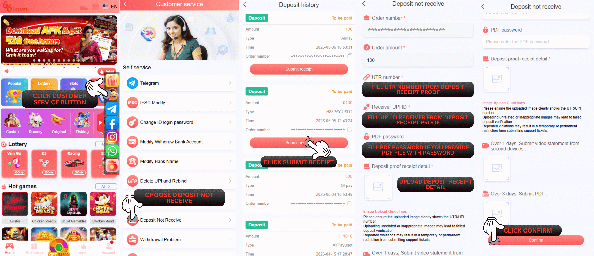

Deposit Not Receive More Than 1Day
Q : Why haven't I received the deposit I paid from yesterday to now?
A: If you have made a deposit but have not received the money since yesterday, it may be delayed by the bank. Please make sure you have filled in the deposit form correctly and paid according to the barcode that appears.
Q : What can I do if my deposit hasn't received it since yesterday?
A : If your deposit is not received in more than 1 day, kindly submit your problem to the self-service center 66 Lottery and upload a video of the bank statement .
Please follow this step :
1.Visit our 66 Lottery official link at: https://www.66lottery.vip/
2.Click Customer Service button
3.Choose Deposit Not Receive
4.Click "Submit UTR" to the deposit order that you already paid
5.Fill UTR number from Deposit Receipt Proof
6.Fill UPI ID Receiver from your Deposit Receipt Proof
7.Fill PDF password (if the PDF file contain password)
8.Upload a photo of your Deposit Receipt Proof (clear and detail)
9.Upload a video of the bank statement (if not received more than 1 day)
10.Click the "Confirm" button
Please follow this step :

Q : I'm not really understand about the UTR number and Receiver UPI ID where i can find that?
A : You can find it on the bank / wallet apps you using :
1.You open the bank / wallet apps you use for transfer deposit
2.Search on the history transaction / inbox
3.Click the transaction you do to show the detail transfer
You can check also the photo below to see the Explaination to check the deposit receipt proof :
1.Deposit amount
2.Receiver UPI ID
3.UTR number
4.Time and date transaction
This 4 step is need to be show clear and detail so our deposit department can help to check faster.

You can check also the photo below to see the Explaination to check the deposit receipt proof :
This 4 step is need to be show clear and detail so our deposit department can help to check faster.
STATUS ISSUE
Q : How do i check my status issue Deposit Not Receive on self-service center 66 Lottery?
A : You can check the status issue by pressing the "Progress Query" for checking all the order record status that you have been submitted to self-service center.
SUCCESS STATUS
Q : I already checking and the status in here already success and there is a notes Success "Deposit success process to your account with UTR:xxxx and Deposit Order :xxxx" what is that mean ?
A : For that mean our deposit department already checking your deposit and succesfullly process to your 66 Lottery account, you just need to check it on 66 Lottery account to see your balance enter.
"SUCCESS", we will help to explain is few not for this category succesfull on the below :
"Your deposit order number XXXXXXXXXX with UTR XXXX has been transferred on XXXX. Thank you"
Explaination : After reviewing your request, we found that the deposit issue you requested has already been succesfullly processed to your account. The deposit was applied to your ID with the following details: order number, UTR number, and the date and time of the succesfull transaction. Kindly check your deposit transaction history for confirmation.
"The deposit proof you provide with UTR XXXXXX has already been succesfullly processed to other platform.Thank you"
Explaination : After reviewing your request, we found that the deposit in question has already been succesfullly processed to another account or to the account that originally completed the deposit form and made the payment using the barcode generated during that process. Please check your ID account again and ensure that all future payments are made using the barcode provided after completing the deposit form. Kindly note that each barcode can be used for only one payment, and each deposit receipt is valid for only one ID account.
"SUCCESS", we will help to explain is few not for this category succesfull on the below :
REJECT STATUS
Q : What about with status reject i need to know if my Deposit Not Receive issue get reject by 66 Lottery account department?
A: Okay rest assured we will help to explain to you there is few possibility that make your account got rejection and we will give Explaination on this below :
A: "INCORRECT ID", we will help to explain is few not for this category succesfull on the below :
"Hello! Please kindly check and resubmit the correct ID because we can not find the ID number in the system. Thank You! Sorry for the inconvenient."
Explaination : After reviewing your request, we found that the ID account you provided appears to be incorrect or invalid. Our system was unable to find the ID account you submitted. The error may be due to using the wrong ID account when submitting the request. Please ensure you are logged in with the correct ID account when filling out the deposit form. Once you've verified this, kindly resubmit your request with the correct ID so we can properly process your deposit.
"Hello! Please kindly check and resubmit with the correct Deposit Order because we can not find the match order in the system. Thank You! Sorry for the inconvenient."
Explaination : After reviewing your request, we found that the ID account you provided appears to be incorrect or invalid. Our system cannot find the deposit order number that matches the deposit receipt you sent from your ID account. The error may be due to using the wrong ID account when submitting the request. Please ensure you are logged in with the correct ID account when filling out the deposit form. Once you've verified this, kindly resubmit your request with the correct ID so we can properly process your deposit.
B: "PROOF INCOMPLETED", we will help to explain is few not for this category succesfull on the below :
"The deposit proof that you submitted is incorrect. Kindly resubmit with the correct deposit receipt that showing all the complete details (Success Tittle, Amount, UTR no, Receiver UPI ID, Time & Date)"
Explaination : After reviewing your request, we found that the deposit receipt you provided appears to be incorrect or incomplete. Our system was unable to match the deposit order to the deposit receipt you submitted. The error may be due to using the wrong deposit receipt or an incomplete deposit receipt when submitting the request. Please ensure you make the payment according to the barcode that appears when filling out the deposit form. Once you've verified this, kindly resubmit your request with the succesfull detailed deposit receipt that contains the payer information, payee information, specific time (including year, month, day, hour, minute, and second), payment amount, UTR, recipient's UPI ID, and payment receipt so we can properly process your deposit.
"Provide full proof receipt with UPI ID shown! Remember proof must be show with amount , UPI ID receiver, UTR number, date and time"
Explaination : The submitted deposit receipt does not include the UPI ID, so our system are unable to verify it. Please resubmit the succesfull detailed deposit receipt that clearly shows the that contains the payer information, payee information, specific time (including year, month, day, hour, minute, and second), payment amount, UTR, recipient's UPI ID, and payment receipt so we can properly process your deposit.
"Provide full proof receipt with UTR number shown! Remember proof must be show with amount , UPI ID receiver, UTR number, date and time"
Explaination : The submitted deposit receipt does not include the UTR number, so our system are unable to verify it. Please resubmit the succesfull detailed deposit receipt that clearly shows the that contains the payer information, payee information, specific time (including year, month, day, hour, minute, and second), payment amount, UTR, recipient's UPI ID, and payment receipt so we can properly process your deposit.
"Provide full proof receipt with date and time shown! Remember proof must be show with amount , UPI ID receiver, UTR number, date and time"
Explaination : The submitted deposit receipt does not include the date and time, so our system are unable to verify it. Please resubmit the succesfull detailed deposit receipt that clearly shows the that contains the payer information, payee information, specific time (including year, month, day, hour, minute, and second), payment amount, UTR, recipient's UPI ID, and payment receipt so we can properly process your deposit.
"Provide full proof receipt with amount shown! Remember proof must be show with amount , UPI ID receiver, UTR number, date and time"
Explaination : The submitted deposit receipt does not include the amount, so our system are unable to verify it. Please resubmit the succesfull detailed deposit receipt that clearly shows the that contains the payer information, payee information, specific time (including year, month, day, hour, minute, and second), payment amount, UTR, recipient's UPI ID, and payment receipt so we can properly process your deposit.
C: "TRANSACTIONS FAILED", we will help to explain is few not for this category succesfull on the below :
"The deposit proof that you submitted is in failed status. Kindly provide another deposit receipt with the succesfull status"
Explaination : After reviewing your request, we found that the deposit receipt you provided appears to transactions a failed transaction status. Please ensure you make the succesfull payment according to the barcode that appears when filling out the deposit form. Once you've verified this, kindly resubmit your request with the succesfull detailed deposit receipt that contains the payer information, payee information, specific time (including year, month, day, hour, minute, and second), payment amount, UTR, recipient's UPI ID, and payment receipt so we can properly process your deposit.
"Provide proof receipt with status success with all detail showed (amount,date,time,utr,upi id)"
Explaination : After reviewing your request, we found that the deposit receipt you provided to be incomplete so your deposit still pending. Please ensure you make the succesfull payment according to the barcode that appears when filling out the deposit form. Once you've verified this, kindly resubmit your request with the succesfull detailed deposit receipt that contains the payer information, payee information, specific time (including year, month, day, hour, minute, and second), payment amount, UTR, recipient's UPI ID, and payment receipt so we can properly process your deposit.
D: "MINIMUM DEPOSIT", we will help to explain is few not for this category succesfull on the below :
"For minimum deposit ₹100 , we apologize deposit below the minimum amount will not process to XXXX account, please do deposit again with minimum deposit ₹100."
Explaination : After reviewing your request, we found that the deposit receipt you provided was incorrect or did not meet the minimum deposit requirement of ₹100, so your deposit was rejected. Make sure you make a succesfull payment according to the barcode that appears when filling out the deposit form with the available deposit amount options of at least ₹100. Once you've verified this, kindly resubmit your request with the succesfull detailed deposit receipt that contains the payer information, payee information, specific time (including year, month, day, hour, minute, and second), payment amount, UTR, recipient's UPI ID, and payment receipt so we can properly process your deposit.
"Hello, we checking here your deposit actual received amount is only ₹1. For minimum deposit ₹100 , we apologize deposit below the min will not process to XXXX account, please do deposit again with minimum deposit ₹100."
Explaination : After reviewing your request, we found that the deposit receipt you provided was only for ₹1 or did not meet the minimum deposit requirement of ₹100, so your deposit was rejected. Please make a deposit again with the correct deposit value of at least ₹100. After succesfullly making a payment according to the barcode that appears when filling out the deposit form, kindly resubmit your request with the succesfull detailed deposit receipt that contains the payer information, payee information, specific time (including year, month, day, hour, minute, and second), payment amount, UTR, recipient's UPI ID, and payment receipt so we can properly process your deposit.
E: "NOT YET RECEIVED", we will help to explain is few not for this category succesfull on the below :
"Your deposit has not been received, Please kindly provide the PDF/VIDEO bank statement showing the proof of your deposit on that date if you haven't received after 24 hours. Thank you"
Explaination : After reviewing your request, we found that the deposit you made has not been received. Please resubmit your request along with a PDF or video of your complete bank statement. The statement must clearly display your full name, bank account number, bank name, IFSC code, and the deposit transaction with the visible UTR number so we can accurately verify and process your deposit.
"Please provide a clear video record of your bank statement using 2 different devices and attach the PDF file showing payment UTR XXX. Thank you"
Explaination : After reviewing your request, we found that the deposit you made has not been received more than 3 days. Please resubmit your request along with a video recording of your mobile banking transaction, captured using two different devices. The video should clearly display your full name, bank account number, bank name, IFSC code, and the deposit transaction with the visible UTR number so we can accurately verify and process your deposit.
"After checking the deposit receipt, we still have not received it. Please kindly provide with the correct PDF/VIDEO bank statement showing the proof of your deposit on that date with the UTR NUMBERS of XXXXX . Thank you"
Explaination : After reviewing your request, we found that the PDF or video of your bank statement is incorrect. Please resubmit your request along with the correct PDF or video of your complete bank statement that matches your succesfull deposit payment. The statement must clearly show your full name, bank account number, bank name, IFSC code, and the deposit transaction with the visible UTR number so we can accurately verify and process your deposit.
"Your deposit has not been received, Kindly resubmit with another correct PDF/VIDEO bank statement"
Explaination : After reviewing your request, we found that the deposit you made has not yet been received. Please resubmit your request along with the correct PDF or video of your complete and up-to-date bank statement so we can accurately verify and process your deposit.
"Your deposit has not been received, Kindly resubmit with another correct PDF/VIDEO bank statement showing the proof of your deposit and showing your transaction UTR no: XXXXXX. Thank you"
Explaination : After reviewing your request, we found that the deposit you made has not yet been received. Please resubmit your request along with the correct PDF or video of your complete and up-to-date bank statement. The statement must clearly show your full name, bank account number, bank name, IFSC code, and the deposit transaction with the visible UTR number so we can accurately verify and process your deposit.
"Please provide again more clear newest video record of your bank statement using 2 different devices and attach the PDF file showing payment UTR XXX. Thank you"
Explaination : After reviewing your request, we found that the deposit you made has not yet been received. Please resubmit your request along with a PDF of your up-to-date bank statement and a video recording of your current mobile banking transaction, captured using two different devices. The video must clearly display your full name, bank account number, bank name, IFSC code, and the deposit transaction with the visible UTR number so we can accurately verify and process your deposit.
A: "INCORRECT ID", we will help to explain is few not for this category succesfull on the below :
B: "PROOF INCOMPLETED", we will help to explain is few not for this category succesfull on the below :
C: "TRANSACTIONS FAILED", we will help to explain is few not for this category succesfull on the below :
D: "MINIMUM DEPOSIT", we will help to explain is few not for this category succesfull on the below :
E: "NOT YET RECEIVED", we will help to explain is few not for this category succesfull on the below :